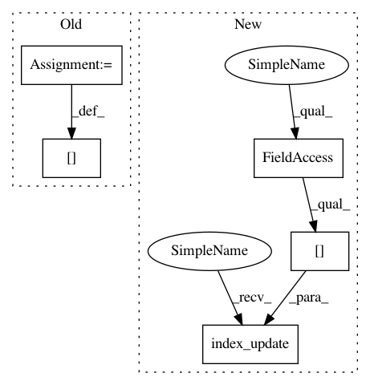

bb6a0c5bf4c57da967edca44b585c47069ce9f5c,tensorly/decomposition/symmetric_parafac.py,,symmetric_parafac_power_iteration,#Any#Any#Any#Any#Any#,76
Before Change
for i in range(rank):
eigenval, eigenvec, deflated = symmetric_power_iteration(tensor, n_repeat=n_repeat, n_iteration=n_iteration, verbose=verbose)
factor[:, i] = eigenvec
weigths[i] = eigenval
tensor = deflated
return weigths, factor
After Change
for i in range(rank):
eigenval, eigenvec, deflated = symmetric_power_iteration(tensor, n_repeat=n_repeat, n_iteration=n_iteration, verbose=verbose)
factor = tl.index_update(factor, tl.index[:, i], eigenvec)
weigths = tl.index_update(weigths, tl.index[i], eigenval)
tensor = deflated
return weigths, factor
In pattern: SUPERPATTERN
Frequency: 3
Non-data size: 5
Instances
Project Name: tensorly/tensorly
Commit Name: bb6a0c5bf4c57da967edca44b585c47069ce9f5c
Time: 2020-08-06
Author: jean.kossaifi@gmail.com
File Name: tensorly/decomposition/symmetric_parafac.py
Class Name:
Method Name: symmetric_parafac_power_iteration
Project Name: tensorly/tensorly
Commit Name: 9448b0b630345e5ee56cc11d032894f3f56b2e80
Time: 2020-04-27
Author: yngve.m.moe@gmail.com
File Name: tensorly/decomposition/tests/test_parafac2.py
Class Name:
Method Name: test_parafac2_normalize_factors
Project Name: tensorly/tensorly
Commit Name: 336985a53ecf76dc7536136737a83ced67d97199
Time: 2020-04-22
Author: yngvemoe@NMBU.NO
File Name: tensorly/decomposition/parafac2.py
Class Name:
Method Name: _compute_projections